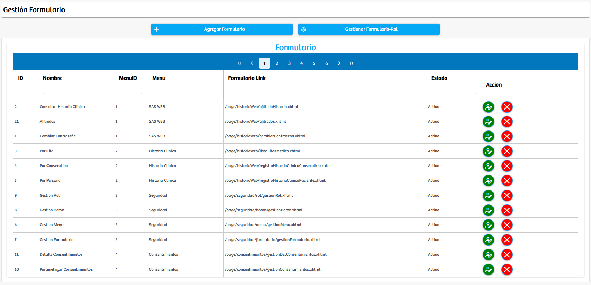

Modulos Sas-Web
Funcionalidades
Gestion de los Formularios
En este modulo podremos encontrar la forma de manejar los formularios que existen en la aplicación SASWEB. Primero esta el botón para agregar un formulario nuevo “Agregar Formulario”, después de este se encuentra otro botón: “Gestionar formulario-rol”. Debajo de ellos se encuentra la tabla principal con la información de los formularios: ID, nombre, menuID, menú, formulario link, estado, acción - donde sabemos que se puede actualizar y eliminar. estos están asociados a un menú, y se dejan ver por medio de un link especifico para cada uno.
Luego de oprimir el boton: "Gestionar Formulario-Rol" se abrira una nueva vista. En la cual podremos gestionar a que roles de usuario les podra salir el formulario que estemos trabajando.